Starting from scratch and working our way up.
Before diving into never-ending sea of science and proofs, we need to reconstruct our approach, thought process, and worldview.
Logical Fallacy
If even one of these is present in someone's argument, it renders their entire argument void and false, no matter how attractive it appears.
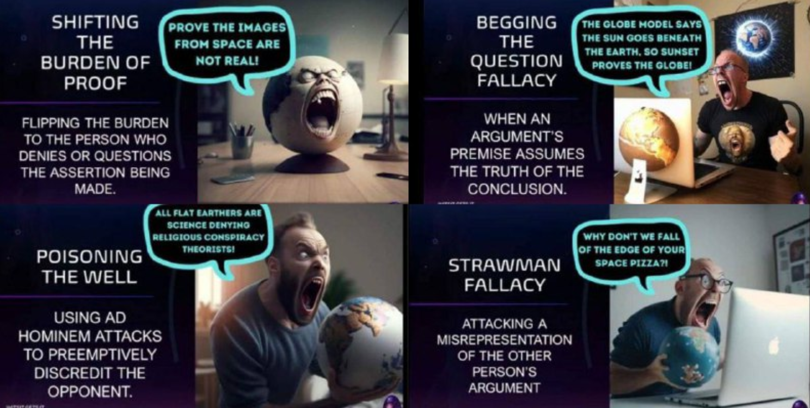
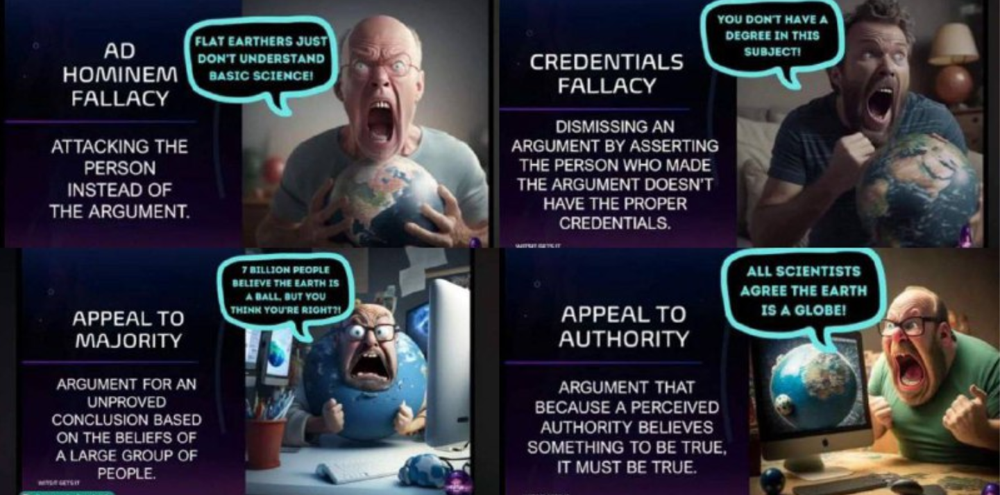
Disclaimer: These images are NOT Flat Earth!
These are created by disinformation platforms so that when you look up Flat Earth, you see this nonsense, and get turned away from it.
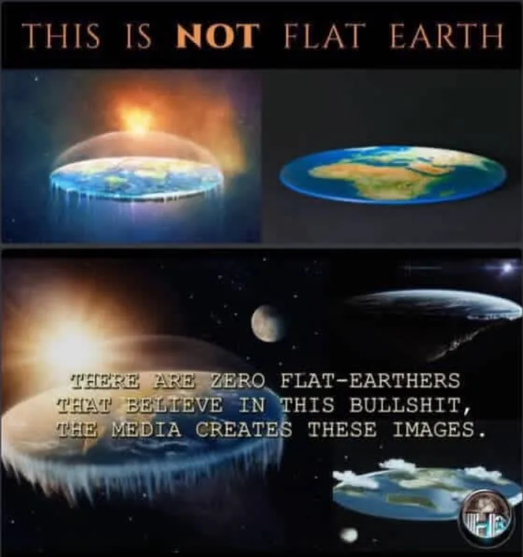
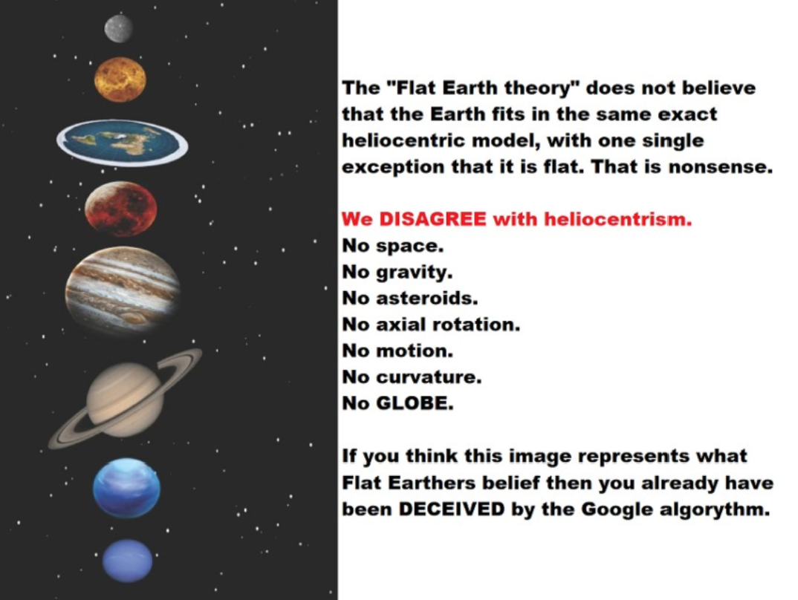
There is no infinite void space vacuum, and no titanic-sized stars scattered around. Think of the Flat Earth cosmology like a house:
Our earth is the main floor at the centre, and above us is a physical ceiling. Islamically, we believe Jahannam (Hell) is below us (but unreachably deep for us).
People will never cease to ask us,
"Where is the edge?"
We in return ask them "Where is the edge of space?" They will say that they don't know, or nothing is there. In the same way that they do not not have an answer, we should not be expected to have an answer to everything, especially the unknowable.
That being said, there is NO EDGE. It is a fact that all water needs a container.
"Wouldn't the water spill off the edge?"
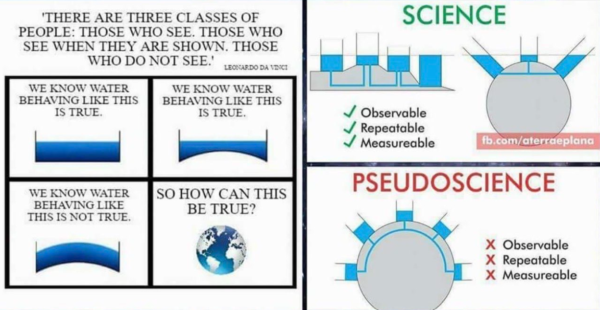
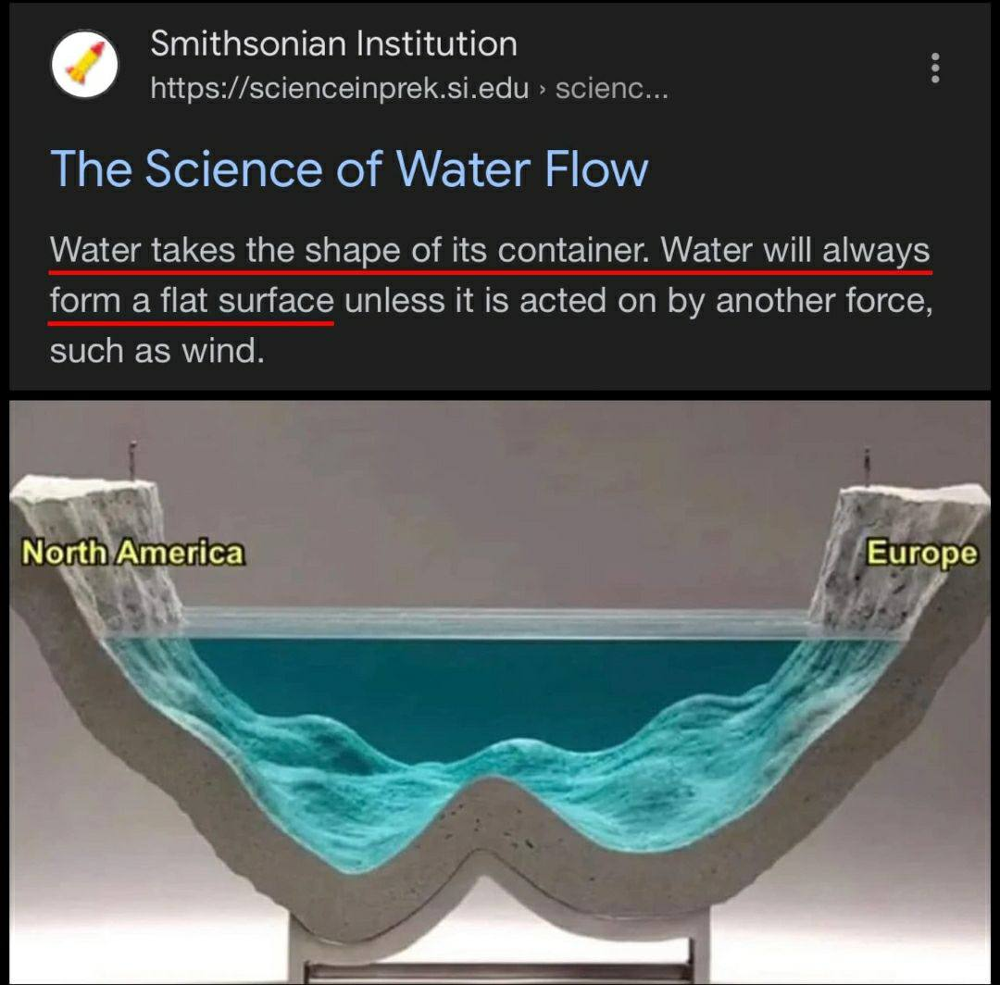
Shore-contained water bodies lay observably horizontal. There is never a direct drop over distanced measurements of Earth's supposed curvature.
If something has no curvature, what is it?
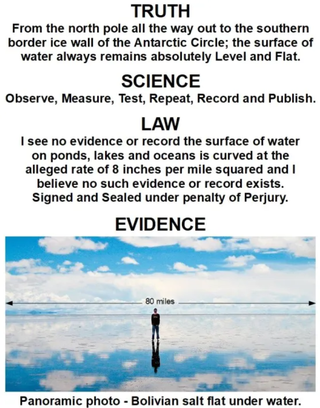
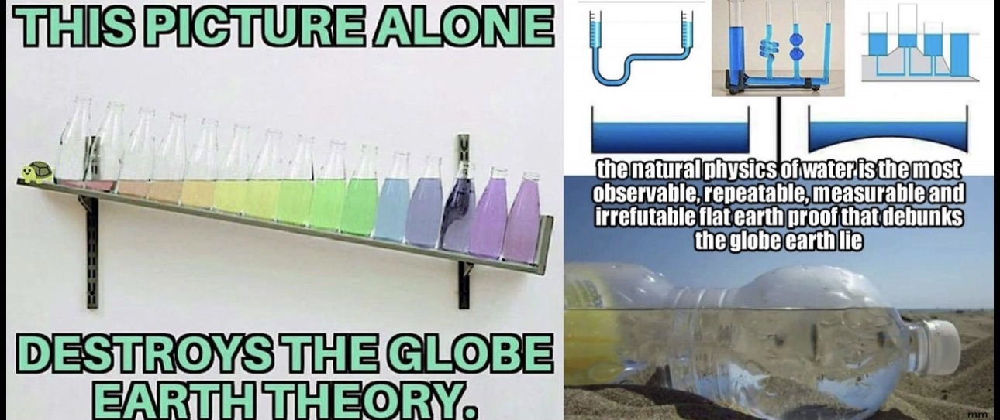
What About Pictures From Space?
Continents are sometimes half the entire world... and change sizes in every image.
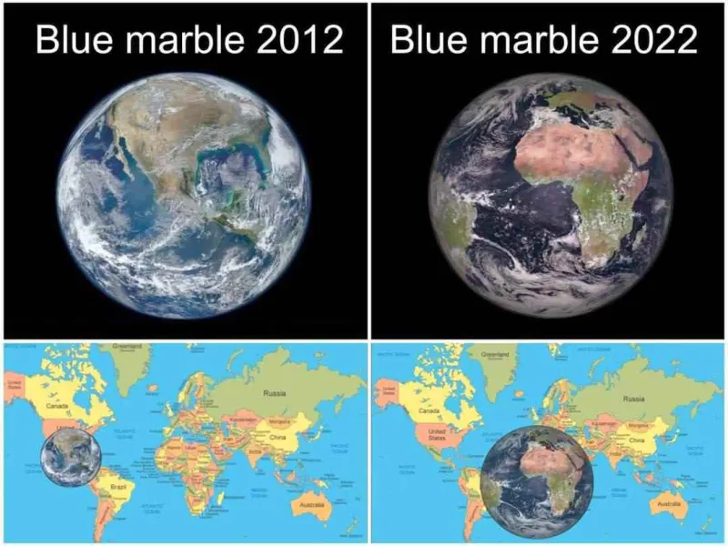
NASA admits that they photoshop their images...
When the fish-eye lens curves the wrong way...
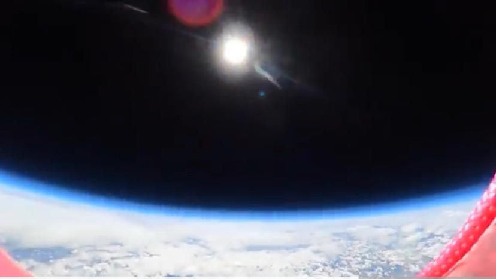
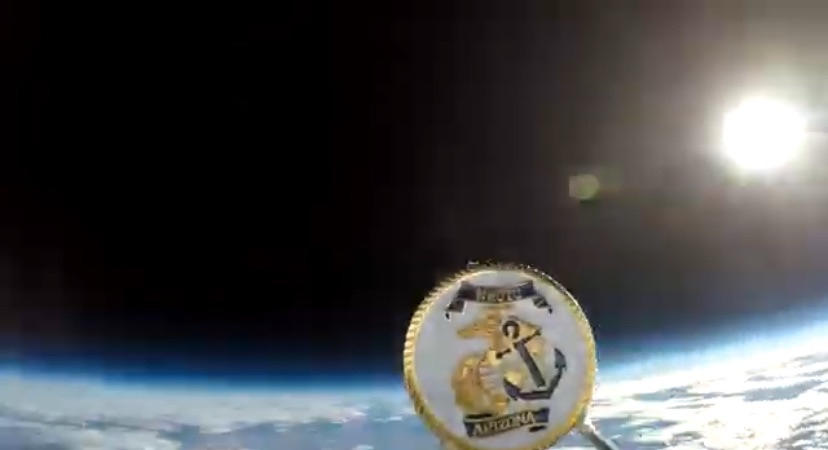
What About Ships Going Over the Horizon?

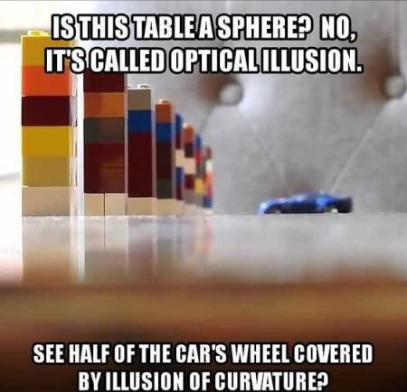
If you can zoom in, then this means the ship never went over a curve, because curvature means physical blockage.
This destroys the globe model alone when taking into account the curvature rate of the supposed globe.
Click on this to see a curvature rate calculator.
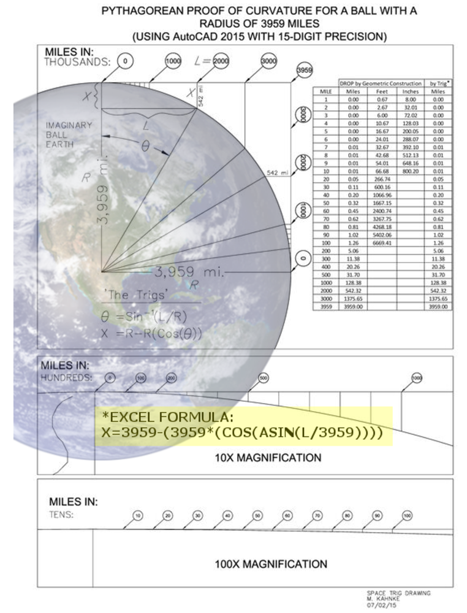
All over the world, you can see spots that are IMPOSSIBLE to see on the globe model.
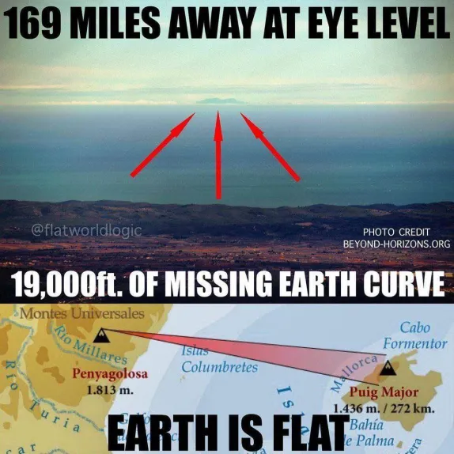
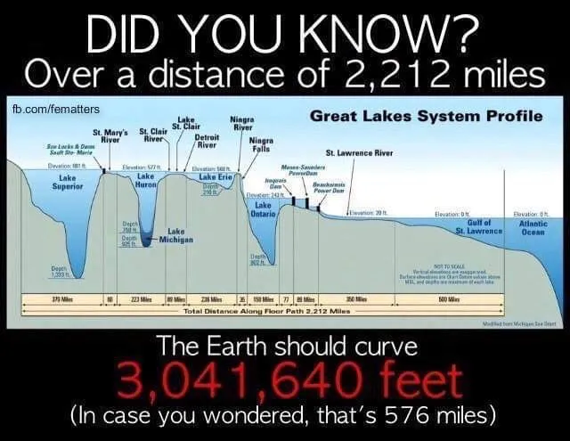
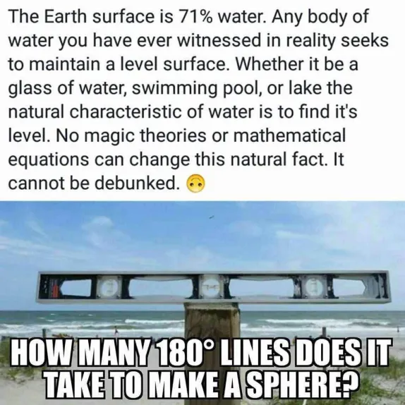